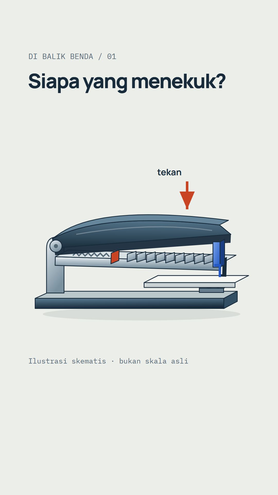
01: Siapa yang menekuk?
0.00–6.00s · estimate
Kita menekan dari atas. Tapi siapa yang menekuk kaki staples di bawah kertas?

Kita menekan dari atas. Tapi siapa yang menekuk kaki staples di bawah kertas?
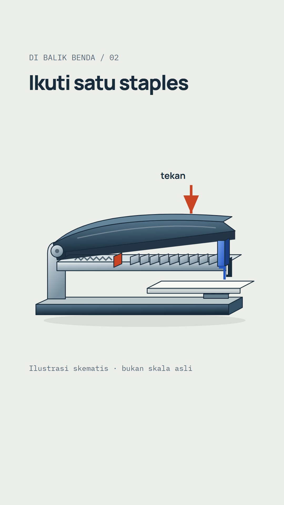
Kita ikuti stapler manual biasa, dengan kaki staples yang dilipat ke dalam.
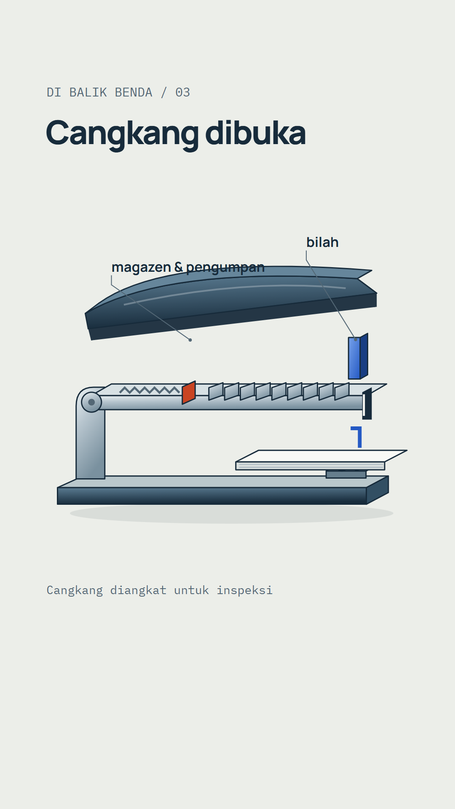
Di dalamnya ada magazen, pengumpan berpegas, dan bilah penekan di ujung depan.
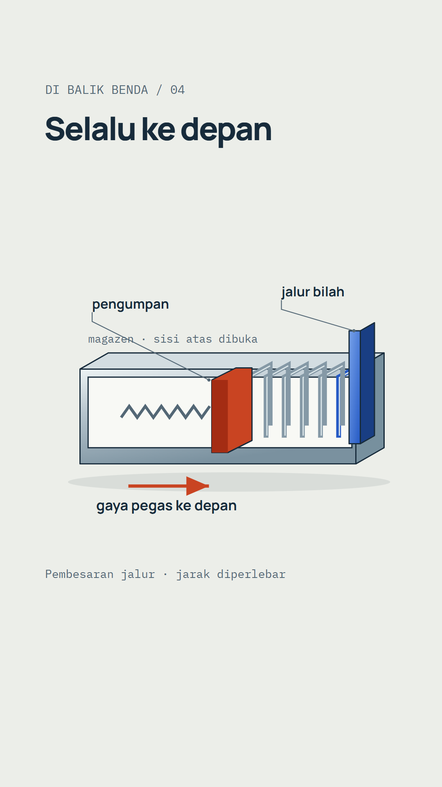
Pengumpan menekan deretan staples ke depan, sampai staples pertama berada di jalur bilah.
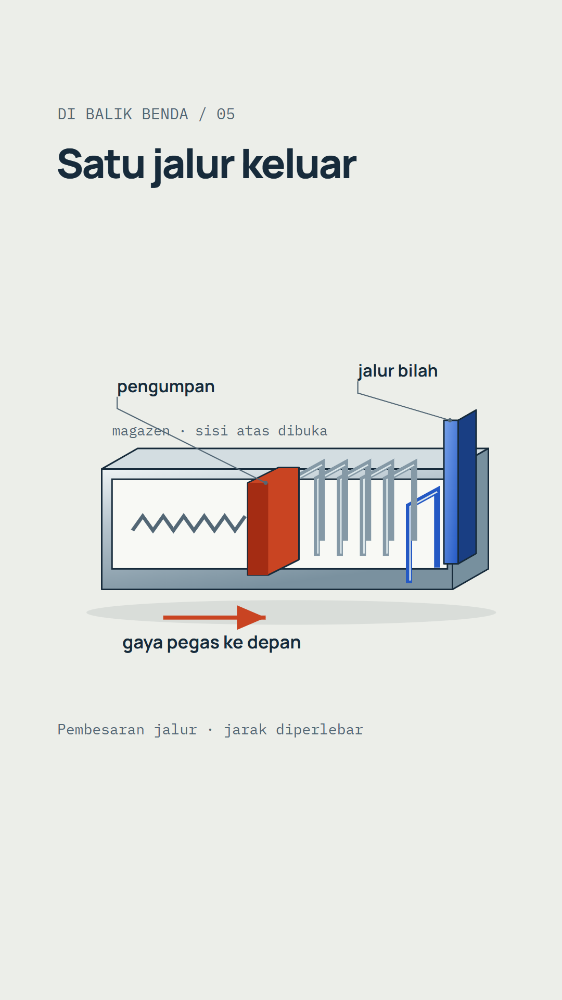
Jalur sempit ini menuntun staples pertama saat didorong turun. Sisanya tetap di magazen.
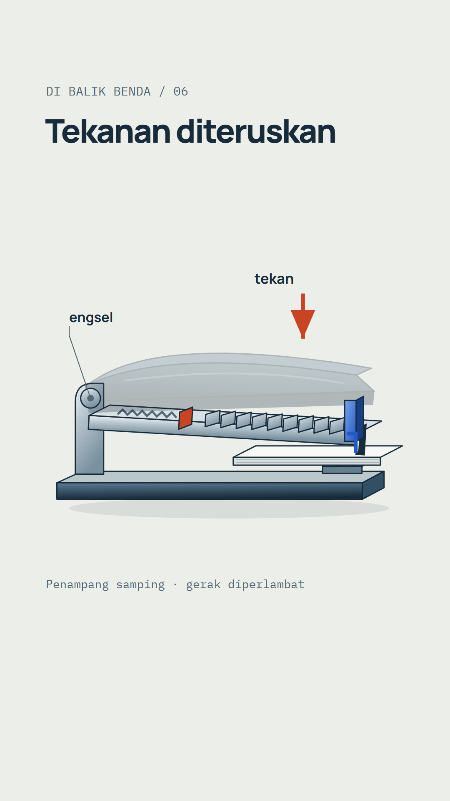
Saat kepala ditekan, lengan berputar pada engsel belakang dan magazen mendekati kertas.
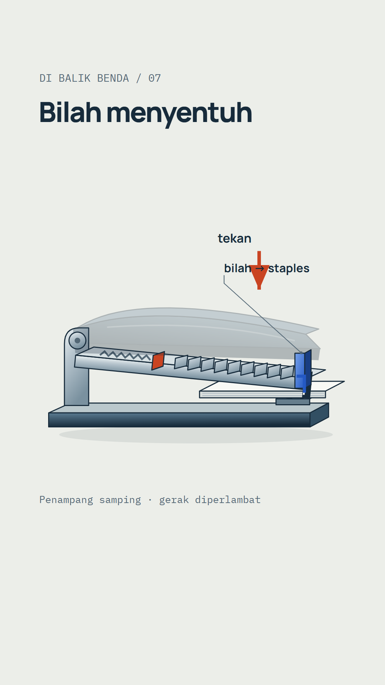
Bilah logam kemudian menekan punggung staples pertama, meneruskan gaya tangan ke kawat.
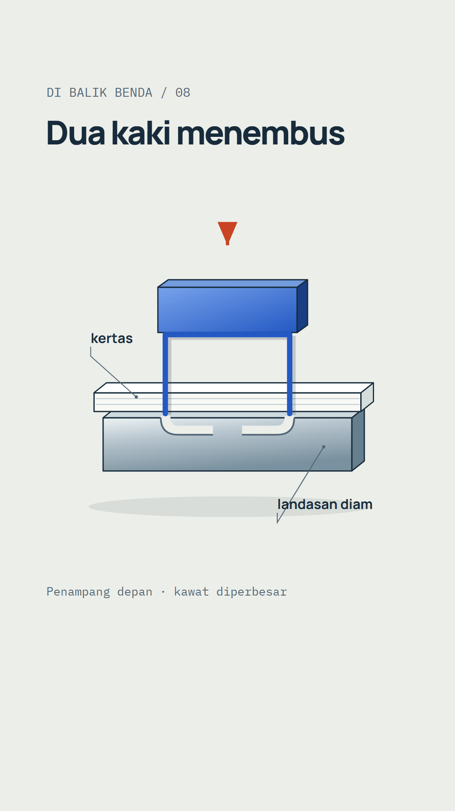
Kedua kaki yang masih lurus menembus lembaran kertas. Belum terlipat menjadi pengunci.
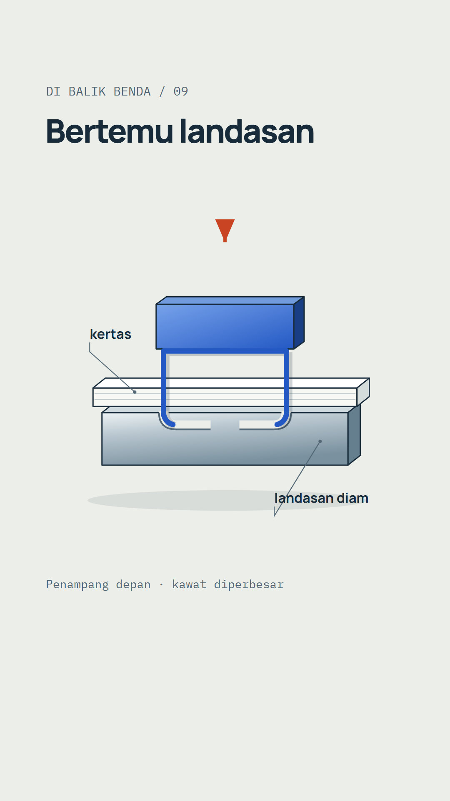
Di bawah kertas, ujung kakinya mencapai alur pada pelat logam, yang disebut landasan.
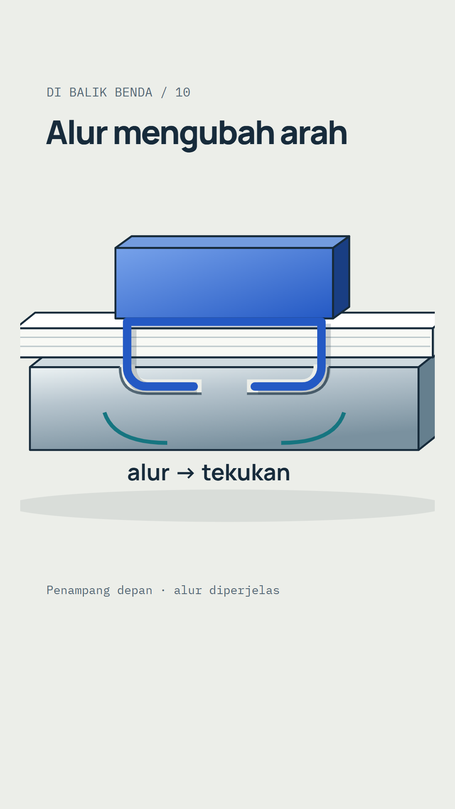
Tekanan berlanjut. Permukaan alur mengarahkan ujung kaki ke dalam sambil kawat menekuk.
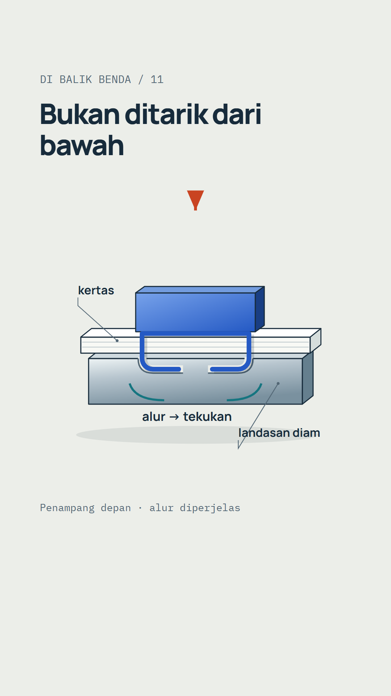
Landasannya tidak perlu bergerak. Bilah tetap mendorong dari atas, alur membelokkan kaki.
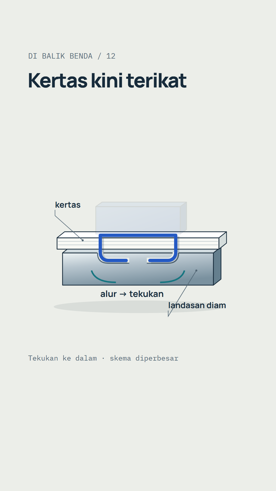
Punggung staples tertahan di atas. Kaki yang terlipat menahan lembaran dari bawah.
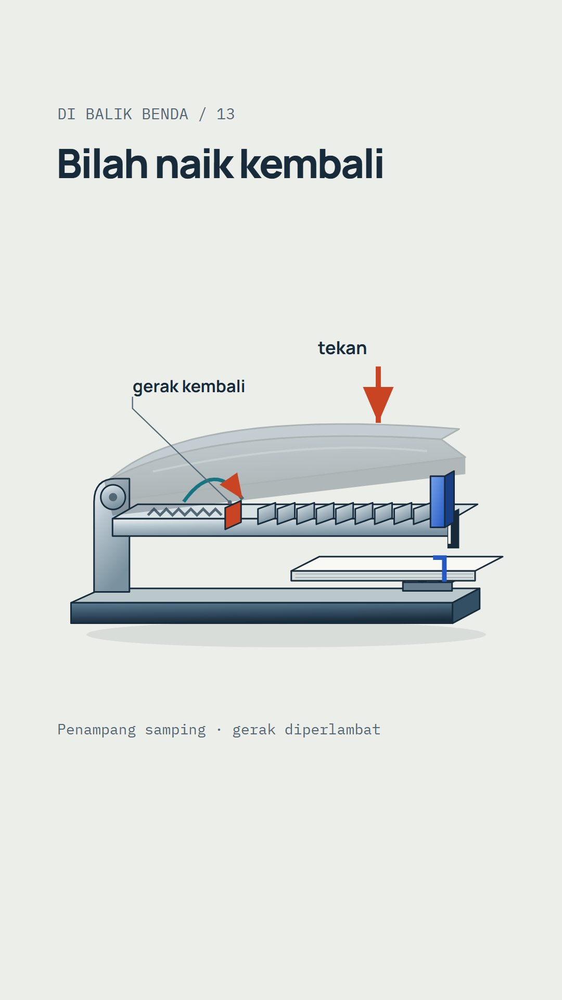
Saat tangan dilepas, pegas mengembalikan mekanisme penekan. Bilah naik dan jalur depan terbuka.
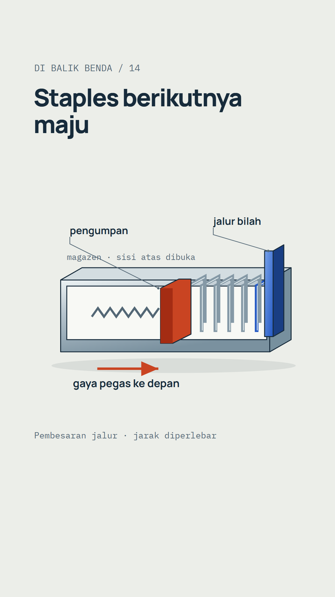
Pengumpan berpegas memajukan deretan staples lagi, menempatkan staples berikutnya di bawah bilah.
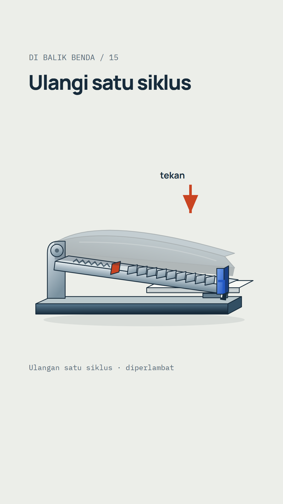
Sekarang lihat utuh: tekan, tembus, tekuk, lalu kembali siap. Gerak cepatnya kita perlambat.
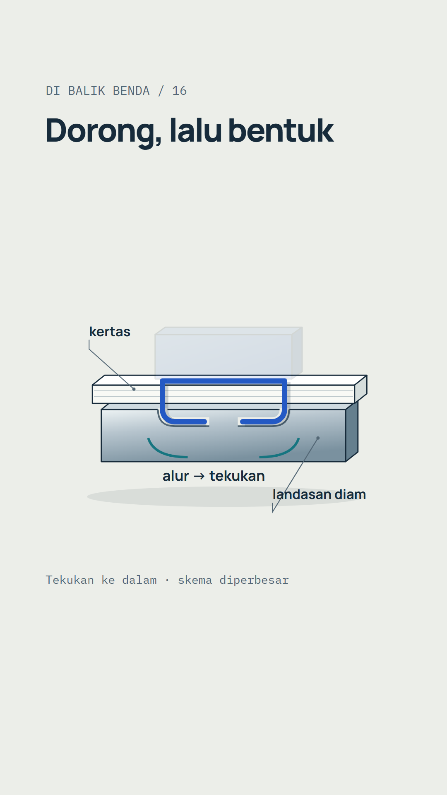
Jadi, bilah mendorong staples. Bentuk alur landasanlah yang menentukan tekukan kakinya.